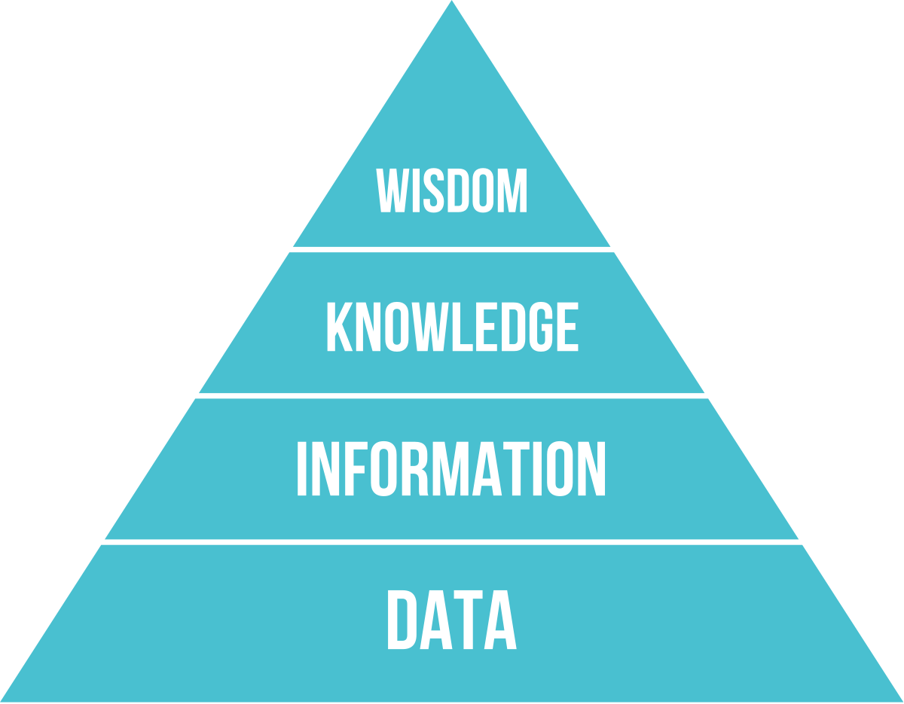

All information professionals require knowledge of formal research processes to support the goals of their organizations through evidence-informed decision-making. The course introduces students to the fundamental concepts of research, the nature and uses of research, philosophical underpinnings of qualitative and quantitative research frameworks, tools and methodologies, research ethics, evaluation of published reports, writing research proposals, and project management.
Research is a process aimed at advancing knowledge
Knowledge claims are directed to a more or less broad audience that is the ultimate judge of its validity and its utility.
Quantitative research
Qualitative research
Mixed methods research
Ontology is interested in the nature of what exists, what is known and whan can be know.
Epistemology is the philosophy of knowledge. What is knowledge and how can knowledge be produced?
Axiology is concerned with the role of values and beliefs in research (for
Positivism
Postpositivism
Interpretativism
Positionality: what we value and believe as individual researchers.
Reflexivity: “The process of engaging in self-reflection about who we are as researchers, how our subjectivities and biases guide and inform the research process, and how our worldview is shaped by the research we do and vice versa” (Jamieson et al., 2023, p. 2)
Methodology: High-level description of the research approach, which can include:
Method: Specific, reproducible process used to collect, process, and analyze data (survey, interview, focus group).
Instruments: the specific instruments used to collect the data (e.g. the survey questions, the interview guide). They are usually included as appendices to the research report.
Deduction: Logical conclusion derived from a set of premises.
Induction: Generalizing from a set of observations.
Abduction: Guessing based on the most likely explanation.
No, you don’t. However, they provide a conceptual framework through which you can recognize the different forms of knowledge and research processes and critically examine your own research or the research of others.
A proposal for your master’s thesis (if you are doing one or thinking of doing one) OR a mixed methods research proposal on an information management related topic of your choice (in groups of 3-5 people). The proposal includes the following sections:
Mingle, think about potential topics, form groups.
All the groups should be formed before the class next week.